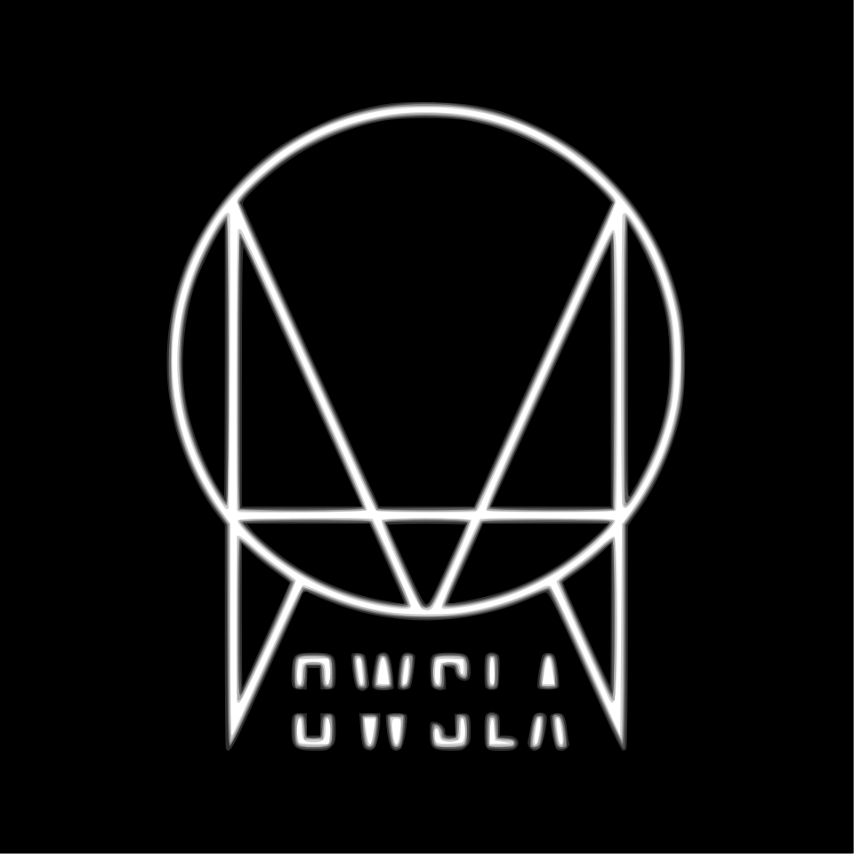
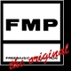

홈 > 브랜드 매거진 > Mille Plateaux
Mille Plateaux
밀 플라토(Mille Plateaux)는 1994년 아힘 셰판스키가 독일 프랑크푸르트에서 설립한 실험 일렉트로닉 레이블이다. 글리치 음악을 대표하는 레이블로 'Clicks & Cuts' 시리즈로 알려졌다.
산업 분야 미디어·엔터테인먼트 · 공개 등급 디렉토리 · 브랜드 평가 3.2 ★
한눈에 보는 브랜드
밀 플라토(Mille Plateaux)는 1994년 아힘 셰판스키가 독일 프랑크푸르트에서 설립한 실험 일렉트로닉 레이블이다. 글리치 음악을 대표하는 레이블로 'Clicks & Cuts' 시리즈로 알려졌다.
브랜드 관점
밀 플라토는 글리치 음악을 정의한 독일의 실험 일렉트로닉 레이블이다. 설립·운영 주체, 주력 장르, 대표 아티스트를 함께 보면 미디어·엔터테인먼트 안에서의 위치가 또렷해진다.
시작과 성장
1994년 아힘 셰판스키가 포스 인크의 서브레이블로 프랑크푸르트에서 설립했다. 들뢰즈·가타리의 저서에서 이름을 따왔고 'Clicks & Cuts' 컴필레이션으로 글리치 음악의 초석을 놓았다.
브랜드 아이덴티티
Mille Plateaux의 아이덴티티는 브랜드명, 로고 사용 여부, 업종 언어, 국가적 배경을 중심으로 정리됩니다. 공개 로고 자산은 추후 권리 확인 후 보강할 수 있도록 텍스트 메타데이터 중심으로 관리합니다.
제품과 서비스
실험 일렉트로닉·글리치 음반을 발매한다. 'Clicks & Cuts' 시리즈가 대표적이다.
현재 상태
타임라인
정리된 연도형 이벤트가 없습니다.
BI/CI 변천사
확인된 BI/CI 이미지가 아직 없습니다.
함께 읽을 브랜드
 미디어·엔터테인먼트 · 디렉토리Global Underground
미디어·엔터테인먼트 · 디렉토리Global Underground글로벌 언더그라운드(Global Underground)는 1996년 앤디 호스필드와 제임스 토드가 영국 뉴캐슬에서 설립한 댄스 음악 레이블이다. DJ 믹스 컴필레이션...
 미디어·엔터테인먼트 · 디렉토리Kompakt
미디어·엔터테인먼트 · 디렉토리Kompakt콤팍트(Kompakt)는 1998년 독일 쾰른에서 설립된 일렉트로닉 음반 레이블이자 유통사다. 미니멀 테크노·마이크로하우스를 대표하는 독립 레이블로, 'Total'...

미디어·엔터테인먼트 · 디렉토리OWSLAOWSLA는 2011년 일렉트로닉 아티스트 스크릴렉스가 미국 로스앤젤레스에서 공동 설립한 EDM 레이블이다. 베이스·덥스텝 등 일렉트로닉 음악을 대표하는 레이블이었으...
 미디어·엔터테인먼트 · 디렉토리DJM Records
미디어·엔터테인먼트 · 디렉토리DJM RecordsDJM 레코드(DJM Records)는 1969년 영국에서 음악 출판사 딕 제임스 뮤직 산하로 만들어진 음반 레이블이다. 엘튼 존의 초기 영국 음반을 발매한 것으로...

미디어·엔터테인먼트 · 디렉토리FMP/Free Music ProductionFMP(Free Music Production)는 1969년 요스트 게버스(Jost Gebers)가 서베를린에서 설립한 프리재즈·즉흥음악 음반 레이블이다. 유럽 자유...
 미디어·엔터테인먼트 · 디렉토리브레인피더
미디어·엔터테인먼트 · 디렉토리브레인피더브레인피더(Brainfeeder)는 2008년 플라잉 로터스가 미국 로스앤젤레스에서 설립한 일렉트로닉·실험음악 레이블이다. 썬더캣·카마시 워싱턴 등을 배출한 독립 레...
 미디어·엔터테인먼트 · 디렉토리워프 레코즈
미디어·엔터테인먼트 · 디렉토리워프 레코즈워프 레코드(Warp Records)는 1989년 스티브 베킷 등이 영국 셰필드에서 설립한 일렉트로닉·실험음악 레이블이다. 에이펙스 트윈·오테커 등을 배출한 IDM의...
체리트리 레코드(Cherrytree Records)는 2005년 마틴 키르셴바움(Martin Kierszenbaum)이 미국에서 설립한 팝·일렉트로닉 음반 레이블이다...